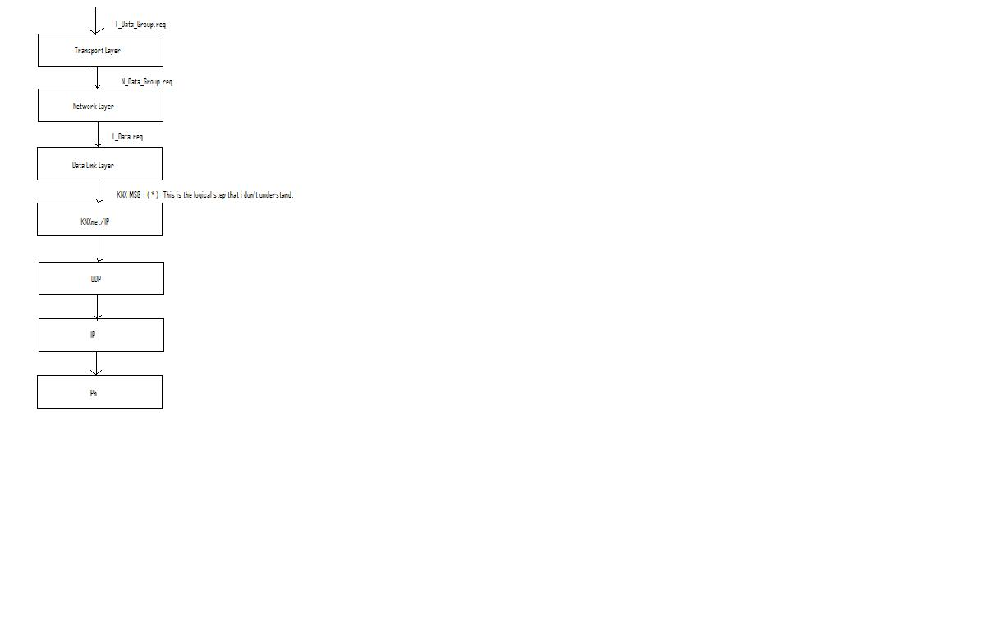
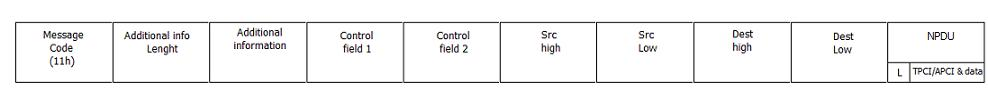

|
This page last changed on May 21, 2009 by knxsimulator.
Hi to all!
I'm a new openRemote user.
I'm trying to simulate KNXnet/IP client and server using OMNET++ to realize my degree thesis; so i hope that here i can receive some useful advise.
In the KNXnet/IP protocol i have read tha every KNXnet/IP server must implement, at least, one Service Container.
Can anyone tell me what is exactly a service container?
The second question is: a KNX frame must be first translated in a cEMI message and then the cEMI is encapsulated into an UDP frame?
Third: in this case the KNX stack contains the Data Link Layer?
Thanks.
|
Service container is an KNX end point (so it has its own Host Protocol Address Information HPAI block). As far as I can tell it's a logical entity for a service provided by the server (discovery, control, etc.). For each connection to the KNX network, the spec mandates a logical service container (my reading of the spec anyway).
There's a cEMI RAW mode but I don't know the details about that, and its implementation is optional by devices.
For tunnelink in KNX datalink, first you need a EIBnet/IP frame, then assuming you're using an already established connection, you append a connection header. Then finally you embed a cEMI frame.
In pure byte format, you'll end up with something like this (group write w/ tunneling on link layer):
byte[] writebuffer = new byte[21];
writebuffer[0] = 0x06; writebuffer[1] = 0x10; writebuffer[2] = 0x04; writebuffer[3] = 0x20; writebuffer[4] = 0x00; writebuffer[5] = 0x15;
writebuffer[6] = 0x04; writebuffer[7] = channelID;
writebuffer[8] = 0x00; writebuffer[9] = 0x00;
int controlField1 = 0x8C;
int controlField2 = 0xE0;
int switchON = 0x81;
writebuffer[10] = 0x11; writebuffer[11] = 0x00; writebuffer[12] = (byte)controlField1;
writebuffer[13] = (byte)controlField2;
writebuffer[14] = 0x00; writebuffer[15] = 0x00; writebuffer[16] = 0x00; writebuffer[17] = 0x04; writebuffer[18] = 0x01; writebuffer[19] = 0x00; writebuffer[20] = (byte)switchON;
So 21 bytes to send 1 bit command to a 2 byte destination address. Supposedly the cEMI RAW mode allows less?
The above assumes you already established a connection (you have ChannelID), your connection will need a heart beat or the gateway is likely to cut you off, and then you need to deal with the ACKs from the gateway itself and the ACK from the endpoint in the KNX network.
Disclaimer: some of the above information may be wrong, my KNX experience is rather limited.
HTH

Posted by juha at May 21, 2009 18:25
|
|
Hi to all.
I still have a problem in understanding how the KNX comunication stack comunicate with the KNXnet/IP protocol.
A KNX/IP device, has this structure.

I think that, in the step  , i must create a message like this (cEMI): , i must create a message like this (cEMI):

Is this correct?
Thanks! 
Posted by knxsimulator at May 23, 2009 07:00
|
|
Hello,
I am new on this site. So I am searching for KNXnet/IP specification. Does anybody have the specification?
Thank you very much.
Myth
Posted by mytrash at Jan 26, 2011 13:49
|
|
{kind=link}
{kind=link}
{kind=link}
{kind=link}
{kind=link}